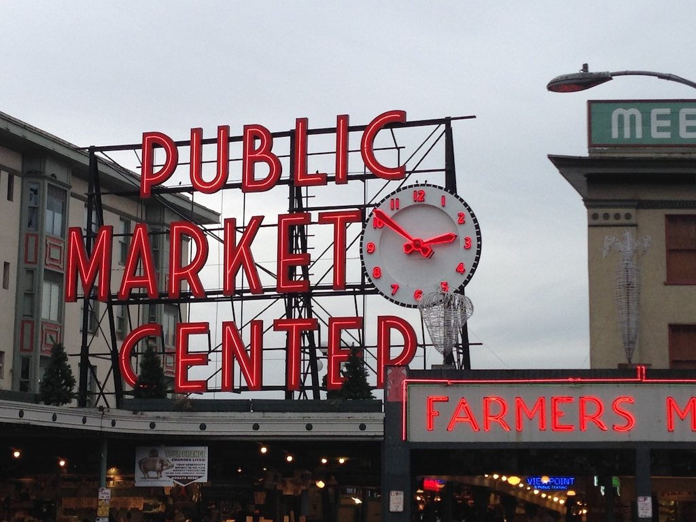

Envisioning the Future
Today was a big day. The Microsoft mother ship.
We began our visit with an hour in the Envisioning Center, this is Microsoft's take on the future, 5 years out. There was some pretty cool stuff in there. If you've ever drooled over the fancy table on Hawaii Five-O where they can flick things from phone to table, table to screen, etc. You have a pretty good idea of where Microsoft thinks the workplace of the future is headed. I'm there, I want it. I'm already imagining myself walking into the classroom, iPad in hand, and flicking a copy of where we left off last class from my iPad to the board. Wait, thats a bit of a mixed vision, I'm pretty sure they were surface pads, not iPads. But you get the idea.
After the Envisioning center we moved to another of the 128 buildings on the Microsoft campus where we had time to have our daily group meeting and book presentation. We were escorted by Tina Wang, and she joined in to the discussion of Sara Lacy's Once you're Lucky, Twice you're good. Tina works as part of Enwe's group, but is the only one here in the US. After our lunch we had a really fun talk with Neil Leslie, who shared a lot of wisdom with the group. And finally Dave Maltz joined us for a final hour on scaling up the data center. Its fair to say that by the time Dave was done everyone had soaked up about as much information as is possible for brain to take in one day.
A couple observations. This is not the Microsoft of the 90's. The Microsoft that I knew and worked with at Net Perceptions were, well, to be blunt, they were bullies back then, because they could be. I get a real sense that is gone. Instead they talk of change, how they need to compete, and if you're comfortable, you shouldn't be there.
Returning to key themes:
- Passion: I don't think I need to say more about this.
- Projects: I've told my seniors this for a few years now, but it has a lot more credibility coming from an outsider. You need to have a project to show when you go to interview. Bring an app you have built on your phone. Show a website you have developed on the browser. Be prepared to talk about the challenges, trade-offs, and succeesses you have had in developing your project.
- Linked In: This is a critical tool for finding a job. If you are a CS junior or senior and have not created a LinkedIn profile. Do it now.
- Failure: We heard a lot of stories about failure today, and we will continue to hear of them. Startups, started and 'buried,' products and projects that failed and never saw the light of day. The most important message, that I hope students get from this trip, and talking to a bunch of successful people, is that failure is OK. Fail Fast, and learn from your mistakes. It is a cliche to say that you learn more from failure than success, but it is true.
In the evening it was fun to unwind with our first group dinner. We met up with recent Luther Alum Jake Nowosatka at Cutters Crabhouse. Its at the far end of Pike Place Market.

Comments